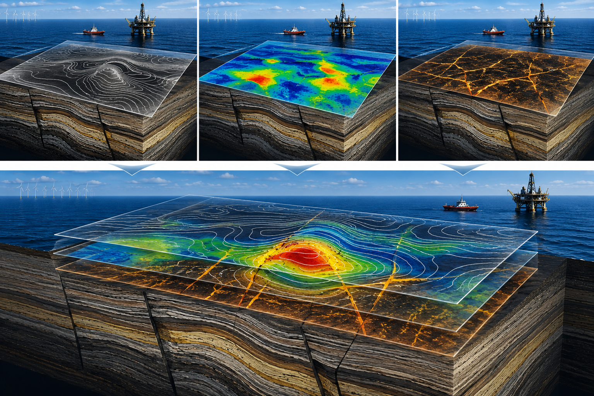

Global Experience
Diverse geological basins and subsurface environments.

From Data to Knowledge,
From Knowledge to Value
WHO WE ARE
SynAtar is an independent, UK-based geoscience and technical advisory consultancy providing integrated subsurface solutions to the global energy sector. We combine extensive international experience, multidisciplinary expertise and advanced analytical capabilities to support operators, asset owners and investors throughout the asset lifecycle — from exploration and appraisal to field development, production and emerging geo-energy opportunities.
With experience across diverse geological basins and complex subsurface environments, we integrate geoscience, engineering, technology and commercial perspectives to deliver technically robust, decision-focused solutions tailored to our clients’ objectives.
Our approach extends beyond conventional data analysis and interpretation. We seek to generate new insights, identify additional opportunities and unlock greater value from both new and existing subsurface data and technical investments. Through independent technical assessment and integrated analysis, we help our clients better understand uncertainties, manage risks and make informed technical, commercial and investment decisions.

Diverse geological basins and subsurface environments.
Multidisciplinary technical and commercial perspectives.
Objective analysis and decision-focused recommendations.